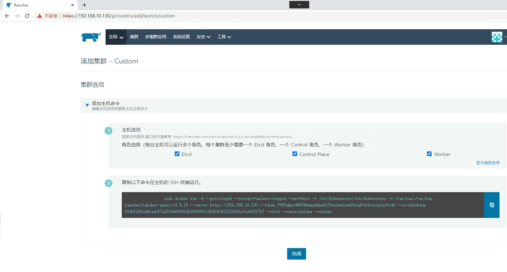

Rancher容器云管理平台¶
一、主机硬件说明¶
| 序号 | 硬件 | 操作及内核 |
|---|---|---|
| 1 | CPU 4 Memory 4G Disk 100G | CentOS7 |
| 2 | CPU 4 Memory 4G Disk 100G | CentOS7 |
| 3 | CPU 4 Memory 4G Disk 100G | CentOS7 |
| 4 | CPU 4 Memory 4G Disk 100G | CentOS7 |
二、主机配置¶
2.1 主机名¶
# hostnamectl set-hostname rancherserver
# hostnamectl set-hostname k8s-master01
# hostnamectl set-hostname k8s-worker01
# hostnamectl set-hostname k8s-worker02
2.2 IP地址¶
[root@rancherserver ~]# vim /etc/sysconfig/network-scripts/ifcfg-ens33
# cat /etc/sysconfig/network-scripts/ifcfg-ens33
TYPE="Ethernet"
PROXY_METHOD="none"
BROWSER_ONLY="no"
BOOTPROTO="none"
DEFROUTE="yes"
IPV4_FAILURE_FATAL="no"
IPV6INIT="yes"
IPV6_AUTOCONF="yes"
IPV6_DEFROUTE="yes"
IPV6_FAILURE_FATAL="no"
IPV6_ADDR_GEN_MODE="stable-privacy"
NAME="ens33"
UUID="ec87533a-8151-4aa0-9d0f-1e970affcdc6"
DEVICE="ens33"
ONBOOT="yes"
IPADDR="192.168.10.130"
PREFIX="24"
GATEWAY="192.168.10.2"
DNS1="119.29.29.29"
[root@k8s-master01 ~]# vim /etc/sysconfig/network-scripts/ifcfg-ens33
[root@k8s-master01 ~]# cat /etc/sysconfig/network-scripts/ifcfg-ens33
TYPE="Ethernet"
PROXY_METHOD="none"
BROWSER_ONLY="no"
BOOTPROTO="none"
DEFROUTE="yes"
IPV4_FAILURE_FATAL="no"
IPV6INIT="yes"
IPV6_AUTOCONF="yes"
IPV6_DEFROUTE="yes"
IPV6_FAILURE_FATAL="no"
IPV6_ADDR_GEN_MODE="stable-privacy"
NAME="ens33"
UUID="ec87533a-8151-4aa0-9d0f-1e970affcdc6"
DEVICE="ens33"
ONBOOT="yes"
IPADDR="192.168.10.131"
PREFIX="24"
GATEWAY="192.168.10.2"
DNS1="119.29.29.29"
[root@k8s-worker01 ~]# vim /etc/sysconfig/network-scripts/ifcfg-ens33
[root@k8s-worker01 ~]# cat /etc/sysconfig/network-scripts/ifcfg-ens33
TYPE="Ethernet"
PROXY_METHOD="none"
BROWSER_ONLY="no"
BOOTPROTO="none"
DEFROUTE="yes"
IPV4_FAILURE_FATAL="no"
IPV6INIT="yes"
IPV6_AUTOCONF="yes"
IPV6_DEFROUTE="yes"
IPV6_FAILURE_FATAL="no"
IPV6_ADDR_GEN_MODE="stable-privacy"
NAME="ens33"
UUID="ec87533a-8151-4aa0-9d0f-1e970affcdc6"
DEVICE="ens33"
ONBOOT="yes"
IPADDR="192.168.10.132"
PREFIX="24"
GATEWAY="192.168.10.2"
DNS1="119.29.29.29"
[root@k8s-worker02 ~]# vim /etc/sysconfig/network-scripts/ifcfg-ens33
[root@k8s-worker02 ~]# cat /etc/sysconfig/network-scripts/ifcfg-ens33
TYPE="Ethernet"
PROXY_METHOD="none"
BROWSER_ONLY="no"
BOOTPROTO="none"
DEFROUTE="yes"
IPV4_FAILURE_FATAL="no"
IPV6INIT="yes"
IPV6_AUTOCONF="yes"
IPV6_DEFROUTE="yes"
IPV6_FAILURE_FATAL="no"
IPV6_ADDR_GEN_MODE="stable-privacy"
NAME="ens33"
UUID="ec87533a-8151-4aa0-9d0f-1e970affcdc6"
DEVICE="ens33"
ONBOOT="yes"
IPADDR="192.168.10.133"
PREFIX="24"
GATEWAY="192.168.10.2"
DNS1="119.29.29.29"
2.3 主机名与IP地址解析¶
# cat /etc/hosts
127.0.0.1 localhost localhost.localdomain localhost4 localhost4.localdomain4
::1 localhost localhost.localdomain localhost6 localhost6.localdomain6
192.168.10.130 rancherserver
192.168.10.131 k8s-master01
192.168.10.132 k8s-worker01
192.168.10.133 k8s-worker02
2.4 主机安全设置¶
# systemctl stop firewalld;systemctl disable firewalld
# firewall-cmd --state
not running
# sed -ri 's/SELINUX=enforcing/SELINUX=disabled/' /etc/selinux/config
2.5 主机时钟同步¶
# crontab -l
0 */1 * * * ntpdate time1.aliyun.com
2.6 关闭swap¶
关闭k8s集群节点swap
# cat /etc/fstab
默认开启，修改后关闭
#/dev/mapper/centos-swap swap swap defaults 0 0
临时关闭所有
# swapoff -a
2.7 配置内核路由转发¶
# vim /etc/sysctl.conf
# cat /etc/sysctl.conf
...
net.ipv4.ip_forward=1
# sysctl -p
net.ipv4.ip_forward = 1
三、docker-ce安装¶
所有主机安装docker-ce
# wget -O /etc/yum.repos.d/docker-ce.repo https://mirrors.aliyun.com/docker-ce/linux/centos/docker-ce.repo
# yum -y install docker-ce
# systemctl enable --now docker
四、rancher安装¶
[root@rancherserver ~]# docker pull rancher/rancher:v2.5.15
[root@rancherserver ~]# mkdir -p /opt/data/rancher_data
[root@rancherserver ~]# docker run -d --privileged -p 80:80 -p 443:443 -v /opt/data/rancher_data:/var/lib/rancher --restart=always --name rancher-2.5.15 rancher/rancher:v2.5.15
[root@rancherserver ~]# docker ps
CONTAINER ID IMAGE COMMAND CREATED STATUS PORTS NAMES
99e367eb35a3 rancher/rancher:v2.5.15 "entrypoint.sh" 26 seconds ago Up 26 seconds 0.0.0.0:80->80/tcp, :::80->80/tcp, 0.0.0.0:443->443/tcp, :::443->443/tcp rancher-2.5.15
五、通过Rancher部署kubernetes集群¶
5.1 Rancher访问¶


本次密码为Kubemsb123

5.2 通过Rancher创建Kubernetes集群¶


添加master节点主机

[root@k8s-master01 ~]# docker run -d --privileged --restart=unless-stopped --net=host -v /etc/kubernetes:/etc/kubernetes -v /var/run:/var/run rancher/rancher-agent:v2.5.15 --server https://192.168.10.130 --token 7985nkpc48854kwmgh6pnfb7hcrkwhlcmx6wxq8tb4vszxn2qv9xdd --ca-checksum f6d5f24fcd41aa057a205d4f6922dfd309001126d040431222bfba7aa93517b7 --etcd --controlplane --worker
[root@k8s-master01 ~]# docker ps
CONTAINER ID IMAGE COMMAND CREATED STATUS PORTS NAMES
8e7e73b477dc rancher/rancher-agent:v2.5.15 "run.sh --server htt…" 20 seconds ago Up 18 seconds brave_ishizaka
添加 worker节点


[root@k8s-worker01 ~]# docker run -d --privileged --restart=unless-stopped --net=host -v /etc/kubernetes:/etc/kubernetes -v /var/run:/var/run rancher/rancher-agent:v2.5.15 --server https://192.168.10.130 --token 7985nkpc48854kwmgh6pnfb7hcrkwhlcmx6wxq8tb4vszxn2qv9xdd --ca-checksum f6d5f24fcd41aa057a205d4f6922dfd309001126d040431222bfba7aa93517b7 --worker
[root@k8s-worker02 ~]# docker run -d --privileged --restart=unless-stopped --net=host -v /etc/kubernetes:/etc/kubernetes -v /var/run:/var/run rancher/rancher-agent:v2.5.15 --server https://192.168.10.130 --token 7985nkpc48854kwmgh6pnfb7hcrkwhlcmx6wxq8tb4vszxn2qv9xdd --ca-checksum f6d5f24fcd41aa057a205d4f6922dfd309001126d040431222bfba7aa93517b7 --worker

所有节点激活后状态


六、配置通过命令行访问Kubernetes集群¶


在集群节点命令行，如果访问呢？

[root@k8s-master01 ~]# cat <<EOF > /etc/yum.repos.d/kubernetes.repo
[kubernetes]
name=Kubernetes
baseurl=https://mirrors.aliyun.com/kubernetes/yum/repos/kubernetes-el7-x86_64/
enabled=1
gpgcheck=1
repo_gpgcheck=1
gpgkey=https://mirrors.aliyun.com/kubernetes/yum/doc/yum-key.gpg https://mirrors.aliyun.com/kubernetes/yum/doc/rpm-package-key.gpg
EOF
修改gpgcheck=0及修改repo_gpgcheck=0
[root@k8s-master01 ~]# vim /etc/yum.repos.d/kubernetes.repo
[root@k8s-master01 ~]# cat /etc/yum.repos.d/kubernetes.repo
[kubernetes]
name=Kubernetes
baseurl=https://mirrors.aliyun.com/kubernetes/yum/repos/kubernetes-el7-x86_64/
enabled=1
gpgcheck=0
repo_gpgcheck=0
gpgkey=https://mirrors.aliyun.com/kubernetes/yum/doc/yum-key.gpg https://mirrors.aliyun.com/kubernetes/yum/doc/rpm-package-key.gpg
[root@k8s-master01 ~]# yum -y install kubectl
[root@k8s-master01 ~]# mkdir ~/.kube

[root@k8s-master01 ~]# vim ~/.kube/config
[root@k8s-master01 ~]# cat ~/.kube/config
apiVersion: v1
kind: Config
clusters:
- name: "kubemsb-smart-1"
cluster:
server: "https://192.168.10.130/k8s/clusters/c-5jtsf"
certificate-authority-data: "LS0tLS1CRUdJTiBDRVJUSUZJQ0FURS0tLS0tCk1JSUJwekNDQ\
VUyZ0F3SUJBZ0lCQURBS0JnZ3Foa2pPUFFRREFqQTdNUnd3R2dZRFZRUUtFeE5rZVc1aGJXbGoKY\
kdsemRHVnVaWEl0YjNKbk1Sc3dHUVlEVlFRREV4SmtlVzVoYldsamJHbHpkR1Z1WlhJdFkyRXdIa\
GNOTWpJdwpPREUyTURZMU9UVTBXaGNOTXpJd09ERXpNRFkxT1RVMFdqQTdNUnd3R2dZRFZRUUtFe\
E5rZVc1aGJXbGpiR2x6CmRHVnVaWEl0YjNKbk1Sc3dHUVlEVlFRREV4SmtlVzVoYldsamJHbHpkR\
1Z1WlhJdFkyRXdXVEFUQmdjcWhrak8KUFFJQkJnZ3Foa2pPUFFNQkJ3TkNBQVJMbDZKOWcxMlJQT\
G93dnVHZkM0YnR3ZmhHUDBpR295N1U2cjBJK0JZeAozZCtuVDBEc3ZWOVJWV1BDOGZCdGhPZmJQN\
GNYckx5YzJsR081RHkrSXRlM28wSXdRREFPQmdOVkhROEJBZjhFCkJBTUNBcVF3RHdZRFZSMFRBU\
UgvQkFVd0F3RUIvekFkQmdOVkhRNEVGZ1FVNnZYWXBRYm9IdXF0UlBuS1FrS3gKMjBSZzJqMHdDZ\
1lJS29aSXpqMEVBd0lEU0FBd1JRSWdMTUJ6YXNDREU4T2tCUk40TWRuZWNRU0xjMFVXQmNseApGO\
UFCem1MQWQwb0NJUUNlRWFnRkdBa1ZsUnV1czllSE1VRUx6ODl6VlY5L096b3hvY1ROYnA5amlBP\
T0KLS0tLS1FTkQgQ0VSVElGSUNBVEUtLS0tLQ=="
- name: "kubemsb-smart-1-k8s-master01"
cluster:
server: "https://192.168.10.131:6443"
certificate-authority-data: "LS0tLS1CRUdJTiBDRVJUSUZJQ0FURS0tLS0tCk1JSUM0VENDQ\
WNtZ0F3SUJBZ0lCQURBTkJna3Foa2lHOXcwQkFRc0ZBREFTTVJBd0RnWURWUVFERXdkcmRXSmwKT\
FdOaE1CNFhEVEl5TURneE5qQTNNVFV3TmxvWERUTXlNRGd4TXpBM01UVXdObG93RWpFUU1BNEdBM\
VVFQXhNSAphM1ZpWlMxallUQ0NBU0l3RFFZSktvWklodmNOQVFFQkJRQURnZ0VQQURDQ0FRb0NnZ\
0VCQUt4Qkh3S0RFZE5WCm1tU2JFZDZXaTZzRFNXcklPZEZ5dFN5Z1puVmk2cXFkYmxXODZRQ1Y1U\
WdEckI5QU43aDJ1RHRZMlFiNGZOTmEKQWZkSVVhS2tjZ0taNnplS1Z3eEdRYkptcEovSk5yYWw2N\
ENldng5QTU1UUFBL29FSzBVbkdackliSjQ5dEl4awp1TnMwNFVIRWxVVUZpWjlmckdBQU9sK3lVa\
GxXQUlLQzhmMUZSeVhpaVZEN2FTcTVodHNWeC9qczBBUUo3R2dFCjMxQUdRcmF4S2s0STVCN1hBY\
1pybHdrS1ljaGFPZnBlNkV6Ly9HZXVFekR5VnN3a09uK2h0ZGNIMlJVSHozUlcKWWVTMGw2ZzZpO\
HcyUXRUakNwTUtId1FRTmQwSjdFM0k1aS9CRVA0azhXSHZIYjBkQk8ydVkyTml1cmNMWWw4dgpHO\
DUyZ2ZibWt2OENBd0VBQWFOQ01FQXdEZ1lEVlIwUEFRSC9CQVFEQWdLa01BOEdBMVVkRXdFQi93U\
UZNQU1CCkFmOHdIUVlEVlIwT0JCWUVGQkg4VzVBbmxKYVNrVXowSzNobms1Vm55MVNnTUEwR0NTc\
UdTSWIzRFFFQkN3VUEKQTRJQkFRQmE0WmtsWmRINUFCOTNWaXhYOUhnMEYwYXdVZWduNkVSRGtRQ\
VBlcHZNaG5ON1lyVGlFN3lUSGxvWApLNS9ROTJ5Y2FnRGVlNjlEbHpvWEppTlNzdEZWYmtaSVN0O\
HVRZFhCYjFoSUtzbXBVYWlSeXFoRmVjbnRaSi85CmhCWmZMRjZnNitBNUlvVGxYOThqMERVU21IV\
is2Q29raXhPV3ZESmJ6dkI2S3VXdnhQbTF5WFgveVpBTDd1U1gKcUNnTC84UjJjSm53dUZhTnFvS\
3I3STE5bDBRNi9VWWQ0bWhralpmUTdqdGlraEpmQXpWRUFtWlVza0hZSkRtdwp6bzJKMUJLL0Jxb\
m8rSFplbThFTExpK1ZhRXVlR280blF4ZmpaSlF2MWFXZHhCMnRrUWovdWNUa1QxRU1kUFBsCm0rd\
kh2MWtYNW5BaHl5eWR0dG12UGRlOWFHOUwKLS0tLS1FTkQgQ0VSVElGSUNBVEUtLS0tLQo="
users:
- name: "kubemsb-smart-1"
user:
token: "kubeconfig-user-9cn9x.c-5jtsf:x57644qvmbfqpmh78fb4cbdnm8zbbxk9hmjb2bjggl5j2hvwnvj4c9"
contexts:
- name: "kubemsb-smart-1"
context:
user: "kubemsb-smart-1"
cluster: "kubemsb-smart-1"
- name: "kubemsb-smart-1-k8s-master01"
context:
user: "kubemsb-smart-1"
cluster: "kubemsb-smart-1-k8s-master01"
current-context: "kubemsb-smart-1"
[root@k8s-master01 ~]# kubectl get nodes
NAME STATUS ROLES AGE VERSION
k8s-master01 Ready controlplane,etcd,worker 35m v1.20.15
k8s-worker01 Ready worker 31m v1.20.15
k8s-worker02 Ready worker 27m v1.20.15
七、通过Rancher部署Nginx应用¶


[root@k8s-master01 ~]# kubectl get svc -n kubemsbf-1
NAME TYPE CLUSTER-IP EXTERNAL-IP PORT(S) AGE
myapp-1 ClusterIP 10.43.15.240 <none> 80/TCP 4m35s
myapp-1-nodeport NodePort 10.43.214.118 <none> 80:32406/TCP 4m35s

八、通过Rancher部署mysql数据库¶
8.1 持久化存储类准备¶
8.1.1 NFS服务¶
[root@nfsserver ~]# lsblk
NAME MAJ:MIN RM SIZE RO TYPE MOUNTPOINT
sda 8:0 0 100G 0 disk
├─sda1 8:1 0 1G 0 part /boot
└─sda2 8:2 0 99G 0 part
├─centos-root 253:0 0 50G 0 lvm /
├─centos-swap 253:1 0 2G 0 lvm
└─centos-home 253:2 0 47G 0 lvm /home
sdb 8:16 0 100G 0 disk /sdb
[root@nfsserver ~]# mkdir /sdb
[root@nfsserver ~]# mkfs.xfs /dev/sdb
[root@nfsserver ~]#vim /etc/fstab
[root@nfsserver ~]# cat /etc/fstab
......
/dev/sdb /sdb xfs defaults 0 0
[root@nfsserver ~]# mount -a
[root@nfsserver ~]# vim /etc/exports
[root@nfsserver ~]# cat /etc/exports
/sdb *(rw,sync,no_root_squash)
[root@nfsserver ~]# systemctl enable --now nfs-server
[root@nfsserver ~]# showmount -e
Export list for nfs-server:
/sdb *
8.1.2 存储卷¶
[root@k8s-master01 ~]# for file in class.yaml deployment.yaml rbac.yaml ; do wget https://raw.githubusercontent.com/kubernetes-incubator/external-storage/master/nfs-client/deploy/$file ; done
需要修改class.yaml中资源对象名称为nfs-client
需要修改deployment.yaml中nfs server及其共享的目录、容器对应的镜像。
[root@k8s-master01 ~]# kubectl apply -f class.yaml
[root@k8s-master01 ~]# kubectl apply -f rbac.yaml
[root@k8s-master01 nfsdir]# vim deployment.yaml
[root@k8s-master01 nfsdir]# cat deployment.yaml
apiVersion: apps/v1
kind: Deployment
metadata:
name: nfs-client-provisioner
labels:
app: nfs-client-provisioner
# replace with namespace where provisioner is deployed
namespace: default
spec:
replicas: 1
strategy:
type: Recreate
selector:
matchLabels:
app: nfs-client-provisioner
template:
metadata:
labels:
app: nfs-client-provisioner
spec:
serviceAccountName: nfs-client-provisioner
containers:
- name: nfs-client-provisioner
image: registry.cn-beijing.aliyuncs.com/pylixm/nfs-subdir-external-provisioner:v4.0.0
volumeMounts:
- name: nfs-client-root
mountPath: /persistentvolumes
env:
- name: PROVISIONER_NAME
value: fuseim.pri/ifs
- name: NFS_SERVER
value: 192.168.10.133
- name: NFS_PATH
value: /sdb
volumes:
- name: nfs-client-root
nfs:
server: 192.168.10.133
path: /sdb
[root@k8s-master01 ~]# kubectl apply -f deployment.yaml
[root@k8s-master01 ~]# kubectl get sc
NAME PROVISIONER RECLAIMPOLICY VOLUMEBINDINGMODE ALLOWVOLUMEEXPANSION AGE
nfs-client fuseim.pri/ifs Delete Immediate false 109m

8.2 MySQL数据库部署¶
8.2.1 PVC准备¶


[root@k8s-master01 ~]# kubectl get pvc -n kubemsbdata
NAME STATUS VOLUME CAPACITY ACCESS MODES STORAGECLASS AGE
myvolume Bound pvc-52460d7f-db89-40ab-b09e-ab9d0cfcaa17 5Gi RWO nfs-client 80s
[root@k8s-master01 ~]# kubectl get pv
NAME CAPACITY ACCESS MODES RECLAIM POLICY STATUS CLAIM STORAGECLASS REASON AGE
pvc-52460d7f-db89-40ab-b09e-ab9d0cfcaa17 5Gi RWO Delete Bound kubemsbdata/myvolume nfs-client 84s
[root@nfsserver ~]# ls /sdb
kubemsbdata-myvolume-pvc-52460d7f-db89-40ab-b09e-ab9d0cfcaa17
8.2.2 MySQL部署¶


8.2.2 MySQL访问¶
8.2.2.1 方案一 通过Rancher web界面访问¶


8.2.2.2 方案二 通过主机访问¶
[root@k8s-master01 ~]# ss -anput | grep ":32666"
tcp LISTEN 0 128 *:32666 *:* users:(("kube-proxy",pid=7654,fd=3))
[root@k8s-master01 nfsdir]# mysql -h 192.168.10.131 -uroot -p123456 -P 32666
......
MySQL [(none)]> show databases;
+--------------------+
| Database |
+--------------------+
| information_schema |
| kubemsb |
| mysql |
| performance_schema |
| sys |
+--------------------+
5 rows in set (0.01 sec)
九、部署wordpress¶


[root@k8s-master01 ~]# dig -t a mysqldata1-0.mysqldata1.kubemsbdata.svc.cluster.local @10.43.0.10
; <<>> DiG 9.11.4-P2-RedHat-9.11.4-26.P2.el7_9.8 <<>> -t a mysqldata1-0.mysqldata1.kubemsbdata.svc.cluster.local @10.43.0.10
;; global options: +cmd
;; Got answer:
;; WARNING: .local is reserved for Multicast DNS
;; You are currently testing what happens when an mDNS query is leaked to DNS
;; ->>HEADER<<- opcode: QUERY, status: NOERROR, id: 63314
;; flags: qr aa rd; QUERY: 1, ANSWER: 1, AUTHORITY: 0, ADDITIONAL: 1
;; WARNING: recursion requested but not available
;; OPT PSEUDOSECTION:
; EDNS: version: 0, flags:; udp: 4096
;; QUESTION SECTION:
;mysqldata1-0.mysqldata1.kubemsbdata.svc.cluster.local. IN A
;; ANSWER SECTION:
mysqldata1-0.mysqldata1.kubemsbdata.svc.cluster.local. 5 IN A 10.42.1.4
;; Query time: 0 msec
;; SERVER: 10.43.0.10#53(10.43.0.10)
;; WHEN: 二 8月 16 21:20:18 CST 2022
;; MSG SIZE rcvd: 151